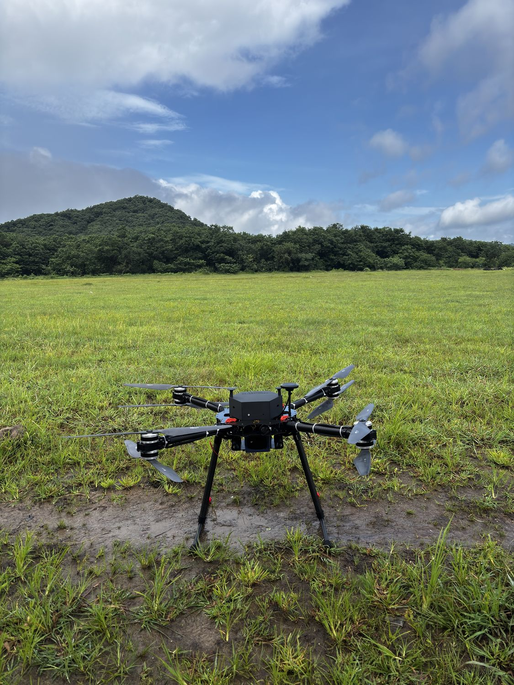

Home / Our Capabilities
Advanced Drone Solutions, Engineered for Every Mission
Indigenous UAV platforms engineered for defence, surveillance, mapping, inspection and industrial operations — with precision, reliability and advanced engineering.

Real-time aerial intelligence
Security teams need eyes in the air that don’t require a pilot on constant standby. Our platforms provide persistent overwatch for public safety, border and perimeter security, crowd monitoring and situational awareness, with an encrypted video downlink to a hardened ground station keeping command informed in real time.
- EO/IR gimbal with 30× zoom and thermal imaging
- Automated patrol routes and geofenced no-fly zones
- Low-acoustic-signature airframe for discreet operation
- AES-encrypted command & video links

High-accuracy aerial mapping
A land survey that once took a field team days on foot can be flown in hours. We deliver GIS-grade orthomosaics, photogrammetry, LiDAR integration and terrain analysis for planning, land records, mining and infrastructure corridors — survey-grade output with RTK/PPK precision.
- Sub-centimetre RTK / PPK positioning
- LiDAR and multispectral payload options
- Automated grid and corridor mission planning
- Direct export to leading GIS / CAD workflows

Infrastructure inspection at scale
Climbing a transmission tower or shutting down a solar array just to inspect it is slow, costly and puts people at risk. Our platforms inspect power lines, solar plants, telecom towers, pipelines and industrial assets without shutdowns or rope access, and repeatable automated flights build a maintenance history over time.
- Thermal anomaly detection for solar and electrical assets
- Close-range obstacle avoidance for confined structures
- Automated repeat missions for change detection
- Structured inspection reports with tagged defects

Rapid situational awareness
In the first hours after a flood, earthquake or wildfire, situational awareness is what separates a fast response from a slow one. Our platforms deploy within minutes — mapping affected zones, locating survivors with thermal imaging and relaying comms where ground infrastructure is down.
- All-weather airframe with wind tolerance to 45 km/h
- Thermal search-and-rescue payload
- Mesh comms relay for first-responder teams
- Live shared map for the incident command post

Custom platforms & payload integration
An off-the-shelf platform rarely fits a non-standard mission. We engineer bespoke airframes, flight-control tuning, EO/IR sensors, comms relays and mission-specific payloads on a modular bay — built with you for specialised defence and industrial programmes.
- Airframe design, CFD and structural validation
- Autopilot and guidance software customisation
- Third-party payload integration and testing
- Field trials with documented performance data
Built to a common, dependable standard
Every configuration inherits the same core — redundant avionics, AES-encrypted links and a field-serviceable, single-operator design.
Tell us about your mission
Share your operational requirements and our engineering team will propose a platform and payload configuration tailored to the job.
Request a Consultation